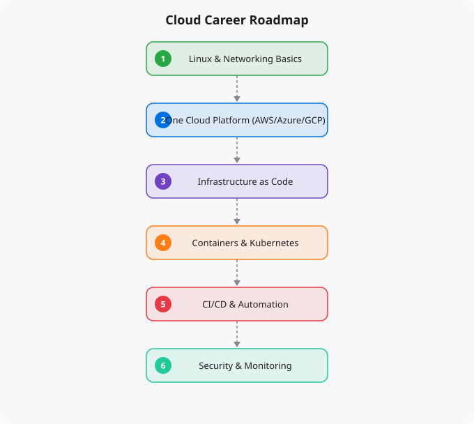

Cloud computing is one of the most in-demand skill areas in technology, and the demand continues to grow as more organizations migrate their infrastructure to cloud platforms and build cloud-native applications. If you want to build a career in cloud, the path is clearer than many people realize — but it requires deliberate skill development, not just studying for certification exams. This roadmap outlines the stages from zero knowledge to professional capability.
Before learning anything cloud-specific, you need a solid foundation in the underlying technologies. Linux command line proficiency is essential — the vast majority of cloud workloads run on Linux, and being comfortable with the terminal is a prerequisite for almost everything else in cloud. Spend time learning basic Linux commands, file system navigation, permissions, process management, and shell scripting. Networking fundamentals are equally important. You need to understand IP addresses, subnets, CIDR notation, DNS, HTTP/HTTPS, TCP/IP basics, and the concept of firewalls. Cloud networking is built on these concepts, and without the foundation, VPCs and security groups will be opaque. Basic programming in Python is valuable at this stage. You do not need to be a software developer, but you should be able to write Python scripts, work with APIs, and understand JSON and YAML — the data formats used extensively in cloud configuration.
Pick one cloud provider and learn it seriously. AWS is the largest by market share and has the most jobs. GCP is strong for data and AI workloads. Azure is dominant in enterprise environments. The choice matters less than the depth of your learning. Start with the core services: compute (EC2 on AWS, Compute Engine on GCP, Virtual Machines on Azure), storage (S3, Cloud Storage, Blob Storage), databases (RDS, Cloud SQL, Azure Database), and networking (VPCs, subnets, security groups). Understand IAM — identity and access management — thoroughly. This is the most important security topic in cloud, and the most common source of security problems. Learn how users, roles, and policies work, and practice the principle of least privilege. By the end of this stage, you should have a foundational certification: AWS Cloud Practitioner, Google Cloud Digital Leader, or Azure Fundamentals. These entry-level certifications validate your foundational knowledge and make your learning visible to employers.
Containers and Kubernetes have become the standard way to package and deploy applications in the cloud. Docker for creating container images, Kubernetes for orchestrating containers at scale — these are non-negotiable skills for modern cloud engineering. Spend real time with Kubernetes: understand pods, deployments, services, ingress, configmaps, secrets, and basic cluster administration. Infrastructure as Code (IaC) with Terraform is another core skill. Being able to define and manage cloud infrastructure in code — reproducibly, version-controlled, automatable — is expected in professional cloud roles. Learn Terraform well enough to create and manage VPCs, compute instances, databases, and load balancers. CI/CD pipelines — automated processes for testing and deploying code changes — are central to modern software delivery. Learn at least one CI/CD tool (GitHub Actions, GitLab CI, Jenkins, AWS CodePipeline) well enough to set up a complete deployment pipeline. By the end of this stage, pursue an associate-level certification: AWS Solutions Architect Associate, Google Associate Cloud Engineer, or Azure Administrator Associate.
Cloud is a broad field with multiple specialization paths. Security engineering (implementing security controls, compliance, threat detection) is in very high demand and commands premium compensation. DevOps and platform engineering (building internal developer platforms, CI/CD infrastructure, developer experience tools) is a natural next step from the foundational DevOps skills. Data engineering (building pipelines and infrastructure for data processing and analytics) is strong for those interested in the data and AI intersection. Site Reliability Engineering (SRE) focuses on reliability, performance, and operational excellence for production systems. Choose a direction that aligns with your interests and the job market in your location. Pursue the relevant advanced certifications and build projects that demonstrate capability in your chosen specialization.
At every stage of this roadmap, build real projects and document them publicly. A GitHub repository of infrastructure code, a blog post explaining something you learned, a deployed application that demonstrates your skills — these are the evidence that turns learned skills into visible qualifications. Hiring managers can review a GitHub profile and assess actual capability in a way that a certification alone does not enable. The most effective portfolio projects are ones that solve real problems: a personal project you actually use, an open source contribution to a tool you work with, a demonstration of a specific technical pattern that is relevant to the jobs you want. Combine this portfolio building with the technical skill development, and you will have both the knowledge and the proof of knowledge that makes career opportunities available.
← Back to BlogCloud computing is a domain where deep intuition — the ability to make good architectural decisions quickly, to diagnose problems efficiently, and to anticipate how systems will behave under load — develops through accumulated hands-on experience. Every project you build on cloud infrastructure teaches you something that cannot be learned from documentation alone. The cost surprises, the permission errors, the networking debugging sessions, the performance investigations — these are not obstacles to learning, they are the learning. The engineers who have built genuinely deep cloud intuition have usually accumulated it through many projects over several years, not from any single course or certification. Start building things, make mistakes safely in learning environments, and accumulate that experience deliberately.
Disclaimer:
This article is written for educational and informational purposes only.
It does not provide financial, legal, investment, or professional advice.
Cloud services, pricing, security, and practices may vary by provider,
region, and use case. Always verify information from official
documentation before making decisions.
The most common mistake I see in aspiring cloud engineers is trying to learn everything at once -- jumping between AWS and GCP, trying to master Kubernetes before understanding containers, attempting Terraform before understanding what infrastructure as code solves. A structured progression works dramatically better.
Month 1-2: Linux Fundamentals
- Command line navigation (cd, ls, find, grep)
- File permissions (chmod, chown)
- Process management (ps, kill, systemctl)
- Text processing (awk, sed)
- Shell scripting basics
- Resource: Our Linux Full Tutorial series
Month 3-4: Networking and AWS Basics
- TCP/IP, DNS, HTTP/HTTPS concepts
- AWS account setup, IAM, EC2, VPC, S3
- Security groups, route tables
- AWS CLI configuration
- Resource: AWS Linux Tutorial series + AWS Free Tier
Month 5-6: Docker and Containers
- Docker concepts and Dockerfile
- docker-compose for local dev
- Container networking and volumes
- Docker Hub and private registries
- Resource: Docker Tutorial series
Month 7-8: CI/CD and Git
- Git branching strategies
- GitHub Actions workflows
- Build, test, deploy pipelines
- Secrets management
- Resource: DevOps Roadmap series
Month 9-10: Kubernetes
- Pod, Deployment, Service concepts
- kubectl commands
- Helm for package management
- Resource: Kubernetes Tutorial series
Month 11-12: Terraform and Certification
- Infrastructure as Code with Terraform
- AWS Solutions Architect Associate exam prep
- Build a portfolio project
- Apply for junior cloud/DevOps rolesThe cloud certification market is crowded with options of varying value. These are the certifications that hiring managers actually look for.
AWS Solutions Architect Associate (SAA-C03): The most recognised cloud certification globally. Validates that you understand how to design and deploy systems on AWS. Almost universally respected. If you are choosing one certification, choose this. Study time: 3-6 months. Exam cost: $150.
Certified Kubernetes Administrator (CKA): Hands-on exam that tests real Kubernetes operation skills. Highly respected because it is practical, not multiple-choice. For DevOps and platform engineering roles. Study time: 2-3 months after Kubernetes basics.
HashiCorp Terraform Associate: Validates Infrastructure as Code skills. Growing demand as Terraform becomes the standard for cloud provisioning. Good complement to AWS SA-A. Study time: 1-2 months.
Certifications prove knowledge but a portfolio proves capability. For cloud engineering, a strong portfolio includes: a containerised application deployed on Kubernetes with CI/CD (GitHub Actions pipeline, Docker images in ECR, kubectl deployments), Terraform code that provisions real AWS infrastructure (VPC, EC2, RDS), a monitoring setup with CloudWatch or Prometheus+Grafana, and a GitHub profile showing active infrastructure code. This combination -- certifications plus a demonstrable project -- is what gets interviews converted to offers.
With dedicated full-time study (8+ hours daily), 6-9 months. With part-time learning (2-3 hours daily while working), 12-18 months. The key milestone is completing the AWS SAA-C03 certification and building one complete portfolio project. Most first roles are junior cloud engineer or DevOps engineer positions.
Entry-level cloud/DevOps positions in India: Rs. 5-10 LPA for freshers with certifications. Rs. 10-15 LPA with 1-2 years experience. Rs. 15-25 LPA for mid-level (2-4 years). Rs. 25+ LPA for senior engineers with Kubernetes, Terraform, and AWS expertise. Salaries vary by city (Bangalore, Hyderabad, Pune paying highest).
Learn AWS first. AWS has the largest market share (~32%), the most job postings, and the most learning resources. GCP is strong for data/ML workloads. Azure dominates Microsoft-heavy enterprises. Cloud concepts transfer between platforms -- once you know AWS deeply, learning GCP or Azure takes 2-3 months, not 12.
Yes. India is one of the fastest-growing tech markets globally. These skills are in high demand across startups, MNCs, and product companies in Bangalore, Hyderabad, Pune, and Mumbai.
Follow official documentation, tech blogs from practitioners, GitHub repositories, and communities like Dev.to, Hashnode, and Reddit. Avoid news that creates urgency without substance.
Official documentation first. Then practical tutorials. Then build real projects. SRJahir Tech articles are written from real production experience — bookmark the series that matches your learning goal.
Consistent daily practice for 3-6 months produces real, usable skills. The key is building projects, not just reading. Every article on SRJahir Tech includes practical examples you can implement today.
Yes. All articles on SRJahir Tech are completely free. No paywalls, no subscriptions. Quality technical education should be accessible to everyone, especially aspiring engineers in India.